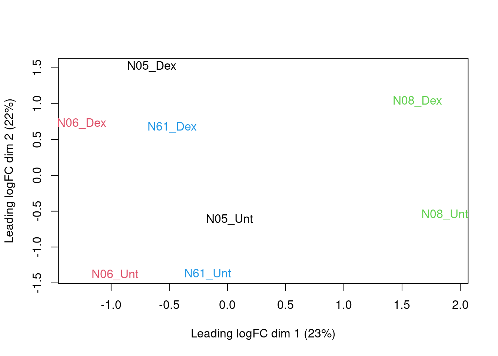
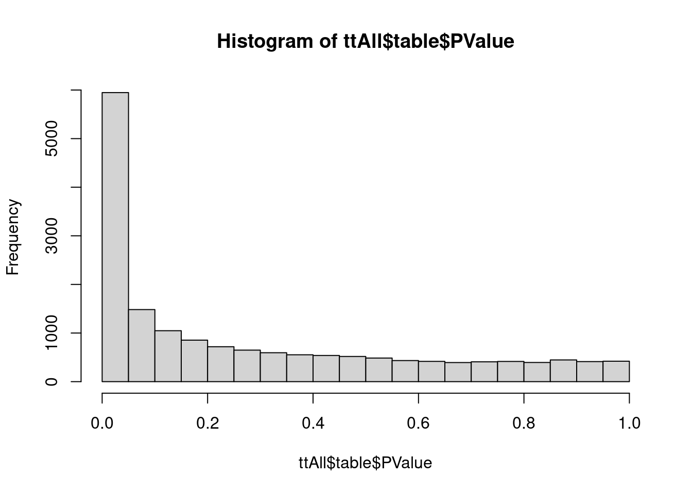
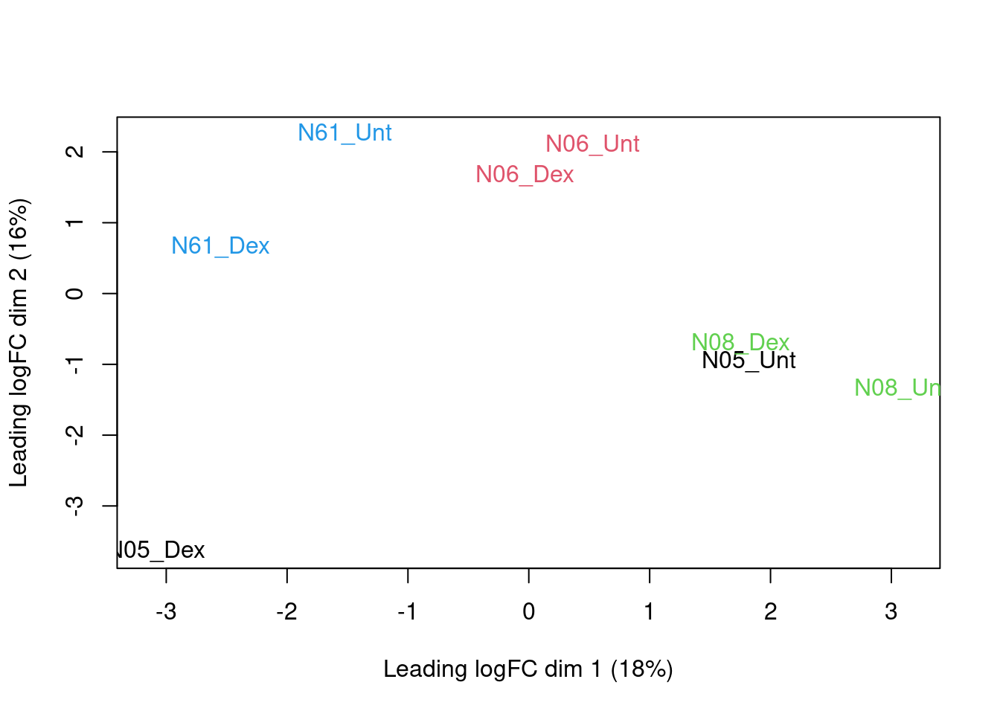
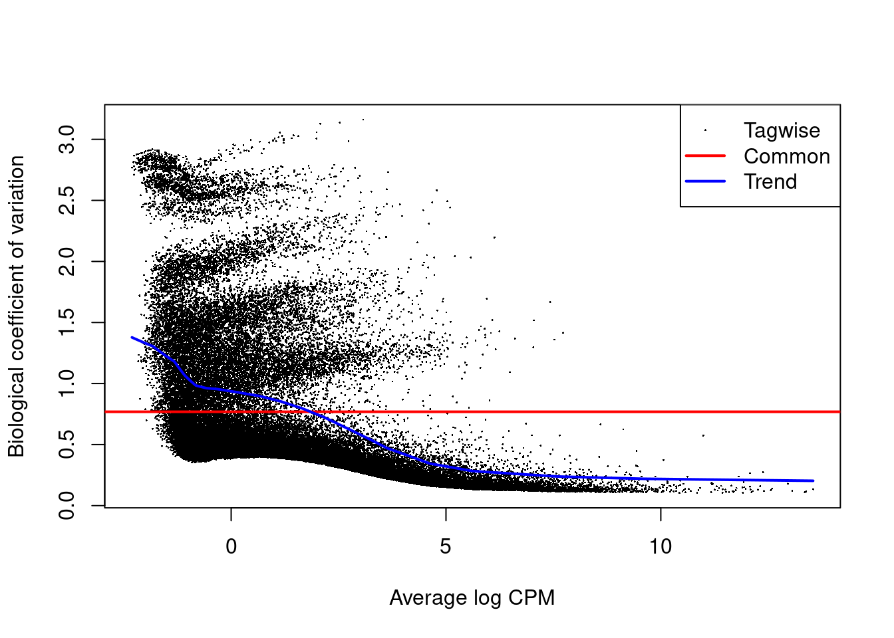
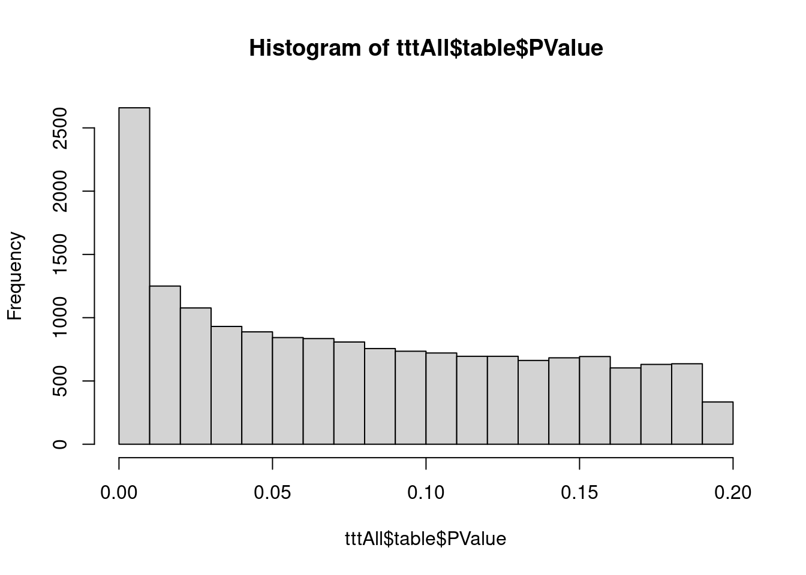

The data used in this workflow comes from an RNA-seq experiment where airway smooth muscle cells were treated with dexamethasone, a synthetic glucocorticoid steroid with anti-inflammatory effects (Himes et al. 2014). Glucocorticoids are used, for example, by people with asthma to reduce inflammation of the airways. In the experiment, four human airway smooth muscle cell lines were treated with 1 micromolar dexamethasone for 18 hours. For each of the four cell lines, we have a treated and an untreated sample. For more description of the experiment see the article, PubMed entry 24926665, and for raw data see the GEO entry GSE52778.
Many parts of this tutorial are based on parts of a published RNA-seq workflow available via Love et al. 2015 F1000Research and as a Bioconductor package and on Charlotte Soneson’s material from the bss2019 workshop.
We will use the salmon quantification files here. This is a lightweight transcript level mapper.
As before, we will retrieve the meta data by linking the SRA files to the meta data on GEO.
## Loading required package: limma## ── Attaching packages
## ───────────────────────────────────────
## tidyverse 1.3.2 ──## ✔ ggplot2 3.3.6 ✔ purrr 0.3.4
## ✔ tibble 3.1.7 ✔ dplyr 1.0.9
## ✔ tidyr 1.2.0 ✔ stringr 1.4.1
## ✔ readr 2.1.2 ✔ forcats 0.5.1
## ── Conflicts ────────────────────────────────────────── tidyverse_conflicts() ──
## ✖ dplyr::filter() masks stats::filter()
## ✖ dplyr::lag() masks stats::lag()## Loading required package: Biobase
## Loading required package: BiocGenerics
##
## Attaching package: 'BiocGenerics'
##
## The following objects are masked from 'package:dplyr':
##
## combine, intersect, setdiff, union
##
## The following object is masked from 'package:limma':
##
## plotMA
##
## The following objects are masked from 'package:stats':
##
## IQR, mad, sd, var, xtabs
##
## The following objects are masked from 'package:base':
##
## anyDuplicated, append, as.data.frame, basename, cbind, colnames,
## dirname, do.call, duplicated, eval, evalq, Filter, Find, get, grep,
## grepl, intersect, is.unsorted, lapply, Map, mapply, match, mget,
## order, paste, pmax, pmax.int, pmin, pmin.int, Position, rank,
## rbind, Reduce, rownames, sapply, setdiff, sort, table, tapply,
## union, unique, unsplit, which.max, which.min
##
## Welcome to Bioconductor
##
## Vignettes contain introductory material; view with
## 'browseVignettes()'. To cite Bioconductor, see
## 'citation("Biobase")', and for packages 'citation("pkgname")'.
##
## Setting options('download.file.method.GEOquery'='auto')
## Setting options('GEOquery.inmemory.gpl'=FALSE)download.file("https://github.com/statOmics/SGA/archive/airwaySeqData.zip","SGA-airwaySeqData.zip")
unzip("SGA-airwaySeqData.zip", exdir = "./")## Found 1 file(s)## GSE52778_series_matrix.txt.gzDownload SRA info. To link sample info to info sequencing: Go to corresponding SRA page and save the information via the “Send to: File button” This file can also be used to make a script to download sequencing files from the web. Note that sra files can be converted to fastq files via the fastq-dump function of the sra-tools.
File is also available on course website.
sraInfo<-read.csv("https://raw.githubusercontent.com/statOmics/SGA/airwaySeqData/SraRunInfo.csv")
sraInfo$SampleName <- as.factor(sraInfo$SampleName)
levels(pdata$SampleName)==levels(sraInfo$SampleName)## [1] TRUE TRUE TRUE TRUE TRUE TRUE TRUE TRUE TRUE TRUE TRUE TRUE TRUE TRUE TRUE
## [16] TRUESampleNames are can be linked.
## [1] "SRR1039508" "SRR1039509" "SRR1039510" "SRR1039511" "SRR1039512"
## [6] "SRR1039513" "SRR1039514" "SRR1039515" "SRR1039516" "SRR1039517"
## [11] "SRR1039518" "SRR1039519" "SRR1039520" "SRR1039521" "SRR1039522"
## [16] "SRR1039523"We do not have the Albuterol samples
rownames(pdata) <- pdata$Run
pdata <- pdata[-grep("Albuterol",pdata[,"treatment:ch1"]),]
pdata[,grep(":ch1",colnames(pdata))]Software such as kallisto [@Bray2016Near], Salmon [@Patro2017Salmon] and Sailfish [@Patro2014Sailfish], as well as other
transcript quantification methods like Cufflinks [@Trapnell2010Cufflinks;
@Trapnell2013Cufflinks2] and RSEM [@Li2011RSEM], differ from the counting methods
introduced in the previous tutorials in that they provide
quantifications (usually both as counts and as TPMs) for each
transcript. These can then be summarized on the gene level by
adding all values for transcripts from the same gene. A simple way to
import results from these packages into R is provided by the
tximport and tximeta packages. Here,
tximport reads the quantifications into a list of matrices, and
tximeta aggregates the information into a
SummarizedExperiment object, and also automatically adds
additional annotations for the features. Both packages can return
quantifications on the transcript level or aggregate them on the gene
level. They also calculate average transcript lengths for each gene and
each sample, which can be used as offsets to improve the differential
expression analysis by accounting for differential isoform usage across
samples [@Soneson2015Differential].
aturecounts object
suppressPackageStartupMessages({
if(!"tximeta" %in% installed.packages()[,1]) BiocManager::install("tximeta")
if(!"org.Hs.eg.db" %in% installed.packages()[,1]) BiocManager::install("org.Hs.eg.db")
library(tximeta)
library(org.Hs.eg.db)
library(SummarizedExperiment)
library(ggplot2)
library(tidyverse)
})## 'getOption("repos")' replaces Bioconductor standard repositories, see
## '?repositories' for details
##
## replacement repositories:
## CRAN: https://cran.rstudio.com## Bioconductor version 3.15 (BiocManager 1.30.18), R 4.2.3 (2023-03-15)## Installing package(s) 'tximeta'## also installing the dependency 'tximport'## Installation paths not writeable, unable to update packages
## path: /opt/R/4.2.3/lib/R/library
## packages:
## class, KernSmooth, lattice, rpart, spatial## Old packages: 'abind', 'askpass', 'backports', 'BH', 'BiocManager',
## 'BiocParallel', 'Biostrings', 'bit', 'bitops', 'blob', 'bookdown', 'boot',
## 'brio', 'broom', 'bslib', 'cachem', 'callr', 'car', 'cli', 'clue', 'cluster',
## 'codetools', 'colorspace', 'commonmark', 'corrplot', 'cowplot', 'cpp11',
## 'crayon', 'crosstalk', 'curl', 'data.table', 'DBI', 'dbplyr',
## 'DelayedMatrixStats', 'deldir', 'desc', 'digest', 'dplyr', 'dqrng', 'DT',
## 'dtplyr', 'ensembldb', 'evaluate', 'fansi', 'farver', 'fastmap', 'filelock',
## 'fontawesome', 'forcats', 'foreign', 'formatR', 'fs', 'gargle', 'generics',
## 'GenomeInfoDb', 'GenomicAlignments', 'GenomicFeatures', 'ggbeeswarm',
## 'ggplot2', 'ggpubr', 'ggrepel', 'ggsci', 'ggsignif', 'glue', 'googledrive',
## 'googlesheets4', 'gtable', 'haven', 'highr', 'hms', 'htmltools',
## 'htmlwidgets', 'httpuv', 'httr', 'igraph', 'interp', 'IRanges', 'isoband',
## 'jpeg', 'jsonlite', 'KEGGREST', 'knitr', 'labeling', 'later', 'lifecycle',
## 'limma', 'lme4', 'locfit', 'lubridate', 'MatrixGenerics', 'MatrixModels',
## 'matrixStats', 'mgcv', 'minqa', 'modelr', 'multcomp', 'munsell', 'mvtnorm',
## 'ncdf4', 'nlme', 'nloptr', 'nnet', 'openssl', 'pbkrtest', 'pillar',
## 'pkgload', 'plotly', 'plyr', 'png', 'prettyunits', 'printr', 'processx',
## 'progress', 'promises', 'ps', 'purrr', 'quantreg', 'R.methodsS3', 'R.oo',
## 'R.utils', 'Rcpp', 'RcppArmadillo', 'RcppEigen', 'RcppHNSW', 'RCurl',
## 'readr', 'readxl', 'rematch', 'renv', 'reprex', 'restfulr', 'rintrojs',
## 'rlang', 'rmarkdown', 'rprojroot', 'RSQLite', 'rstatix', 'rstudioapi',
## 'rtracklayer', 'Rtsne', 'RUnit', 'rvest', 'sandwich', 'sass', 'ScaledMatrix',
## 'scales', 'scuttle', 'shiny', 'SingleCellExperiment', 'sourcetools', 'sp',
## 'SparseM', 'statmod', 'stringi', 'stringr', 'survival', 'sys', 'testthat',
## 'TH.data', 'tibble', 'tidyr', 'tidyselect', 'tidyverse', 'tinytex', 'tzdb',
## 'utf8', 'uuid', 'vctrs', 'vipor', 'viridis', 'viridisLite', 'vroom', 'waldo',
## 'withr', 'xfun', 'xgboost', 'XML', 'xml2', 'yaml', 'zoo'## 'getOption("repos")' replaces Bioconductor standard repositories, see
## '?repositories' for details
##
## replacement repositories:
## CRAN: https://cran.rstudio.com## Bioconductor version 3.15 (BiocManager 1.30.18), R 4.2.3 (2023-03-15)## Installing package(s) 'org.Hs.eg.db'## Installation paths not writeable, unable to update packages
## path: /opt/R/4.2.3/lib/R/library
## packages:
## class, KernSmooth, lattice, rpart, spatial## Old packages: 'abind', 'askpass', 'backports', 'BH', 'BiocManager',
## 'BiocParallel', 'Biostrings', 'bit', 'bitops', 'blob', 'bookdown', 'boot',
## 'brio', 'broom', 'bslib', 'cachem', 'callr', 'car', 'cli', 'clue', 'cluster',
## 'codetools', 'colorspace', 'commonmark', 'corrplot', 'cowplot', 'cpp11',
## 'crayon', 'crosstalk', 'curl', 'data.table', 'DBI', 'dbplyr',
## 'DelayedMatrixStats', 'deldir', 'desc', 'digest', 'dplyr', 'dqrng', 'DT',
## 'dtplyr', 'ensembldb', 'evaluate', 'fansi', 'farver', 'fastmap', 'filelock',
## 'fontawesome', 'forcats', 'foreign', 'formatR', 'fs', 'gargle', 'generics',
## 'GenomeInfoDb', 'GenomicAlignments', 'GenomicFeatures', 'ggbeeswarm',
## 'ggplot2', 'ggpubr', 'ggrepel', 'ggsci', 'ggsignif', 'glue', 'googledrive',
## 'googlesheets4', 'gtable', 'haven', 'highr', 'hms', 'htmltools',
## 'htmlwidgets', 'httpuv', 'httr', 'igraph', 'interp', 'IRanges', 'isoband',
## 'jpeg', 'jsonlite', 'KEGGREST', 'knitr', 'labeling', 'later', 'lifecycle',
## 'limma', 'lme4', 'locfit', 'lubridate', 'MatrixGenerics', 'MatrixModels',
## 'matrixStats', 'mgcv', 'minqa', 'modelr', 'multcomp', 'munsell', 'mvtnorm',
## 'ncdf4', 'nlme', 'nloptr', 'nnet', 'openssl', 'pbkrtest', 'pillar',
## 'pkgload', 'plotly', 'plyr', 'png', 'prettyunits', 'printr', 'processx',
## 'progress', 'promises', 'ps', 'purrr', 'quantreg', 'R.methodsS3', 'R.oo',
## 'R.utils', 'Rcpp', 'RcppArmadillo', 'RcppEigen', 'RcppHNSW', 'RCurl',
## 'readr', 'readxl', 'rematch', 'renv', 'reprex', 'restfulr', 'rintrojs',
## 'rlang', 'rmarkdown', 'rprojroot', 'RSQLite', 'rstatix', 'rstudioapi',
## 'rtracklayer', 'Rtsne', 'RUnit', 'rvest', 'sandwich', 'sass', 'ScaledMatrix',
## 'scales', 'scuttle', 'shiny', 'SingleCellExperiment', 'sourcetools', 'sp',
## 'SparseM', 'statmod', 'stringi', 'stringr', 'survival', 'sys', 'testthat',
## 'TH.data', 'tibble', 'tidyr', 'tidyselect', 'tidyverse', 'tinytex', 'tzdb',
## 'utf8', 'uuid', 'vctrs', 'vipor', 'viridis', 'viridisLite', 'vroom', 'waldo',
## 'withr', 'xfun', 'xgboost', 'XML', 'xml2', 'yaml', 'zoo'The code below imports the Salmon quantifications into R
using the tximeta package. Note how the transcriptome that was
used for the quantification is automatically recognized and used to
annotate the resulting data object. In order for this to work,
tximeta requires that the output folder structure from Salmon
is retained, since it reads information from the associated log files in
addition to the quantified abundances themselves. With the
addIds() function, we can add additional annotation
columns.
## List all quant.sf output files from Salmon
salmonfiles <- paste0("SGA-airwaySeqData/salmon/", pdata$Run, "/quant.sf")
names(salmonfiles) <- pdata$Run
stopifnot(all(file.exists(salmonfiles)))
## Add a column "files" to the metadata table. This table must contain at least
## two columns: "names" and "files"
coldata <- cbind(pdata, files = salmonfiles, stringsAsFactors = FALSE)
coldata$names <- coldata$Run
## Import quantifications on the transcript level
st <- tximeta::tximeta(coldata,importer=read.delim)## importing quantifications## 1 2 3 4 5 6 7 8
## found matching transcriptome:
## [ GENCODE - Homo sapiens - release 29 ]
## useHub=TRUE: checking for TxDb via 'AnnotationHub'
## snapshotDate(): 2022-04-25
## found matching TxDb via 'AnnotationHub'
## downloading 1 resources
## retrieving 1 resource
## loading from cache
## Loading required package: GenomicFeatures
## generating transcript ranges## loading existing TxDb created: 2024-09-16 15:39:57
## obtaining transcript-to-gene mapping from database
## generating gene ranges
## summarizing abundance
## summarizing counts
## summarizing length## mapping to new IDs using org.Hs.eg.db
## if all matching IDs are desired, and '1:many mappings' are reported,
## set multiVals='list' to obtain all the matching IDs
## 'select()' returned 1:many mapping between keys and columns## class: RangedSummarizedExperiment
## dim: 58294 8
## metadata(6): tximetaInfo quantInfo ... txomeInfo txdbInfo
## assays(3): counts abundance length
## rownames(58294): ENSG00000000003.14 ENSG00000000005.5 ...
## ENSG00000285993.1 ENSG00000285994.1
## rowData names(3): gene_id tx_ids SYMBOL
## colnames(8): SRR1039508 SRR1039509 ... SRR1039520 SRR1039521
## colData names(101): SampleName title ... treatment namesNote that Salmon returns estimated counts, which are not necessarily integers. They may need to be rounded before they are passed to count-based statistical methods (e.g. DESeq2). This is not necesary for edgeR.
design <- model.matrix(~treatment+cellLine,data=colData(sg))
keep <- filterByExpr(dge, design)
dge <- dge[keep, ,keep.lib.sizes=FALSE]
dge <- calcNormFactors(dge)## Warning in calcNormFactors.DGEList(dge): object contains offsets, which take precedence over library
## sizes and norm factors (and which will not be recomputed).Note, that the recalculation of libsizes and normalisation factors are overruled because we already have calculated user defined offsets.
One way to reduce dimensionality is the use of multidimensional scaling (MDS). For MDS, we first have to calculate all pairwise distances between our objects (samples in this case), and then create a (typically) two-dimensional representation where these pre-calculated distances are represented as accurately as possible. This means that depending on how the pairwise sample distances are defined, the two-dimensional plot can be very different, and it is important to choose a distance that is suitable for the type of data at hand.
edgeR contains a function plotMDS, which operates on a DGEList object and generates a two-dimensional MDS representation of the samples. The default distance between two samples can be interpreted as the “typical” log fold change between the two samples, for the genes that are most different between them (by default, the top 500 genes, but this can be modified). We generate an MDS plot from the DGEList object dge, coloring by the treatment and using different plot symbols for different cell lines.
colnames(dge) <- paste0(substr(pdata$cellLine,1,3),"_",substr(pdata$treatment,1,3))
plotMDS(dge, top = 500,col=as.double(colData(sg)$cellLine))
fit <- glmQLFit(dge, design)
ftest <- glmQLFTest(fit, coef = "treatmentDexamethasone")
ttAll <- topTags(ftest, n = nrow(dge)) # all genes
hist(ttAll$table$PValue)
## Coefficient: treatmentDexamethasone
## gene_id
## ENSG00000109906.13 ENSG00000109906.13
## ENSG00000157214.13 ENSG00000157214.13
## ENSG00000146250.6 ENSG00000146250.6
## ENSG00000162614.18 ENSG00000162614.18
## ENSG00000120129.5 ENSG00000120129.5
## ENSG00000189221.9 ENSG00000189221.9
## tx_ids
## ENSG00000109906.13 ENST00000335953.8, ENST00000541602.5, ENST00000544220.1, ENST00000535700.1, ENST00000392996.2, ENST00000539918.5, ENST00000545851.5, ENST00000535379.1, ENST00000535509.1
## ENSG00000157214.13 ENST00000428074.5, ENST00000287908.7, ENST00000394621.6, ENST00000394626.5, ENST00000394622.6, ENST00000394632.5, ENST00000426158.1, ENST00000402625.6, ENST00000394629.2, ENST00000482369.1
## ENSG00000146250.6 ENST00000369700.3
## ENSG00000162614.18 ENST00000401035.7, ENST00000330010.12, ENST00000334785.11, ENST00000440324.5, ENST00000342754.5, ENST00000464998.1, ENST00000480732.2, ENST00000470735.1
## ENSG00000120129.5 ENST00000239223.3
## ENSG00000189221.9 ENST00000542639.5, ENST00000338702.3, ENST00000497485.1, ENST00000490604.1
## SYMBOL logFC logCPM F PValue FDR
## ENSG00000109906.13 ZBTB16 6.452578 4.098198 791.3056 9.751807e-09 5.540934e-05
## ENSG00000157214.13 STEAP2 2.017335 7.076725 771.1678 1.070975e-08 5.540934e-05
## ENSG00000146250.6 PRSS35 -2.730888 3.840471 765.3290 1.100971e-08 5.540934e-05
## ENSG00000162614.18 NEXN 2.028802 7.972003 708.9934 1.453505e-08 5.540934e-05
## ENSG00000120129.5 DUSP1 2.949646 7.262409 656.5185 1.921586e-08 5.540934e-05
## ENSG00000189221.9 MAOA 3.392756 6.726966 610.1295 2.506784e-08 5.540934e-05## [1] 3585dte <- DGEList(assays(st)$counts)
design <- model.matrix(~treatment+cellLine,data=colData(st))
keep <- filterByExpr(dte, design)
dte <- dte[keep, ,keep.lib.sizes=FALSE]
dte <- calcNormFactors(dte)
dte$samplescolnames(dte) <- paste0(substr(pdata$cellLine,1,3),"_",substr(pdata$treatment,1,3))
plotMDS(dte, top = 500,col=as.double(colData(st)$cellLine))

Note that we observe problems with respect to the dispersion estimation!
This is probably due to over excess zero’s with respect to the NB distribution.
We have seen similar patterns in the counts of plate based single cell RNA-seq data that are not using UMI’s (unique molecular identifiers).
fitt <- glmQLFit(dte, design)
ftestt <- glmQLFTest(fitt, coef = "treatmentDexamethasone")
tttAll <- topTags(ftestt, n = nrow(dge)) # all genes
hist(tttAll$table$PValue)
## Coefficient: treatmentDexamethasone
## logFC logCPM F PValue FDR
## ENST00000393080.8 3.300567 4.914459 1292.2893 9.146367e-07 0.02817432
## ENST00000330010.12 1.884403 7.632112 952.5065 1.827473e-06 0.02817432
## ENST00000524463.5 1.461677 5.645695 746.7734 3.172184e-06 0.02817432
## ENST00000370763.5 1.622481 5.894695 707.7796 3.581839e-06 0.02817432
## ENST00000472484.5 1.602985 6.391438 661.3345 4.176778e-06 0.02817432
## ENST00000369700.3 -2.747458 3.839607 652.5298 4.305431e-06 0.02817432## [1] 249